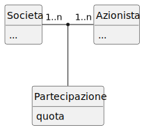

@startuml esempioUseCase
left to right direction
actor Cliente
actor "Societa di spedizioni" AS SS
actor Spedizioniere AS SP
rectangle "Sistema di vendita per corrispondenza" {
usecase InserisciOrdine
usecase AnnullaOrdine
usecase VerificaStatoOrdine
usecase RichiediCatalogo
usecase SpedisciProdotto
}
Cliente -- InserisciOrdine
Cliente -- AnnullaOrdine
Cliente -- VerificaStatoOrdine
Cliente -- RichiediCatalogo
SS -- SpedisciProdotto
SP -- SpedisciProdotto
@enduml@startuml esempioClasse
hide circle
left to right direction
class ContoBancario {
**numeroConto** {id}
correntista
saldo
deposita()
preleva()
calcolaInteresse()
}
@enduml
@startuml esempioAss11Conc
hide circle
hide methods
hide attributes
left to right direction
class Studente
class Badge
Studente "1" -- "0..1" Badge: identificare
@enduml
@startuml esempioAss11Ristr1
hide circle
hide methods
left to right direction
class Studente {
**matricola** {id}
...
}
class Badge {
**codice** {id}
...
}
Studente "1" -- "0..1" Badge: identificare
@enduml
@startuml esempioAss11Ristr2
hide circle
hide methods
left to right direction
class Studente {
**matricola** {id}
codice
...
}
@endumlStudente(matricola <PK>, codiceBadge, …)CREATE TABLE Studente (
matricola INTEGER PRIMARY KEY,
codiceBadge INTEGER,
…
);@startuml esempioAss1nConc
hide circle
hide methods
hide attributes
left to right direction
class Cliente {
**idCliente** {id}
...
}
class Prodotto {
**idProdotto** {id}
}
Cliente "0..1" -- "1..n" Prodotto: acquistare
@enduml
@startuml esempioAss1nRistr1
hide circle
hide methods
left to right direction
class Cliente {
**idCliente** {id}
...
}
class Prodotto {
**idProdotto** {id}
//idCliente// {fk}
...
}
Cliente "0..1" -- "1..n" Prodotto: acquistare
@enduml
Cliente(idCliente <PK>, …)
Prodotto(idProdotto <PK>, idCliente <FK>, …)CREATE TABLE Cliente (
idCliente INTEGER PRIMARY KEY,
…
);
CREATE TABLE Prodotto (
idProdotto INTEGER PRIMARY KEY,
idCliente INTEGER FOREIGN KEY REFERENCES Cliente(idCliente),
…
);@startuml esempioAssnnConc
hide circle
hide methods
hide attributes
class Societa {
**partitaIVA** {id}
...
}
class Azionista {
**CF** {id}
...
}
Societa "1..n" - "1..n" Azionista: Partecipazione
@enduml
@startuml esempioAssnnRistr1
hide circle
hide methods
class Societa {
**partitaIVA** {id}
...
}
class Azionista {
**CF** {id}
...
}
class Partecipazione {
//**partitaIVA**// {id, fk}
//**CF**// {id, fk}
quota
}
Societa "1..n" - "1..n" Azionista
(Societa, Azionista) -- Partecipazione
@enduml
@startuml esempioAssnnRistr2
hide circle
hide methods
left to right direction
class Societa {
**partitaIVA** {id}
...
}
class Azionista {
**CF** {id}
...
}
class Partecipazione {
//**partitaIVA**// {id, fk}
//**CF**// {id, fk}
quota
}
Societa "1" -- "1..n" Partecipazione
Partecipazione "1..n" -- "1" Azionista
@enduml
Societa(partitaIVA <PK>, …)
Azionista(CF <PK>, …)
Partecipazione(partitaIVA <PK, FK>, CF <PK, FK>, quota)CREATE TABLE Societa (
partitaIVA TEXT PRIMARY KEY CHECK (length(partitaIVA) = 11),
…
);
CREATE TABLE Azionista (
CF TEXT PRIMARY KEY CHECK (length(CF) = 16),
…
);
CREATE TABLE Partecipazione (
partitaIVA TEXT REFERENCES Societa(partitaIVA),
CF TEXT REFERENCES Azionista(CF),
quota REAL,
PRIMARY KEY(partitaIVA, CF)
);INTEGER Valore intero con
segno.
REAL Valore numerico
“reale”.
TEXT Una stringa di
caratteri.
BLOB (Binary Large OBject) Una
rappresentazione binaria di un qualunque file.
BOOL FALSE o
TRUE. In SQLite si usa INTEGER con la
convenzione per cui FALSE = 0 e TRUE = 1DATE Conserva la data. In SQLite
possiamo usare TEXT con date scritte secondo lo standard
ISO 8601: “YYYY-MM-DD”.DATETIME. Conserva l’istante
temporale. In SQLite possiamo usare TEXT e lo standard ISO
8601: “YYYY-MM-DD HH:MM:SS.SSS”.